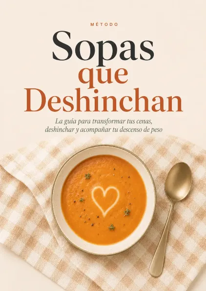
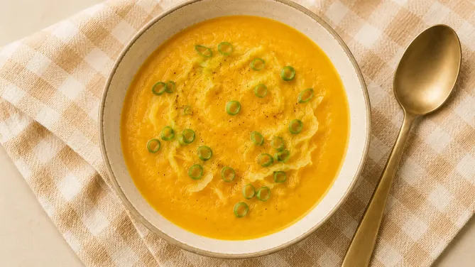
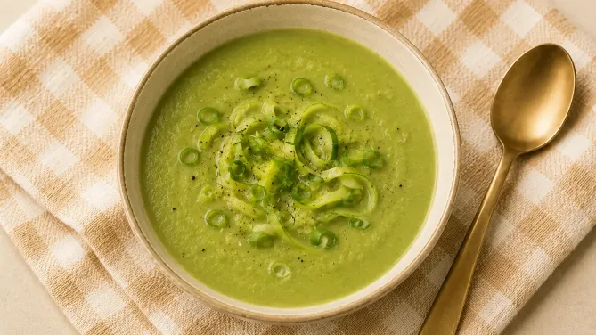
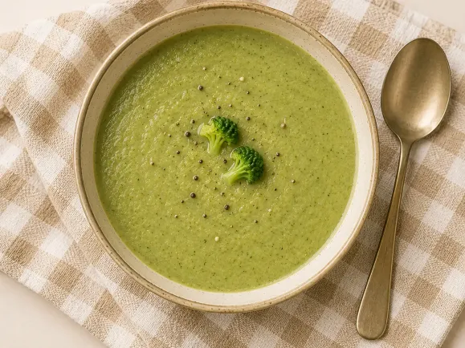
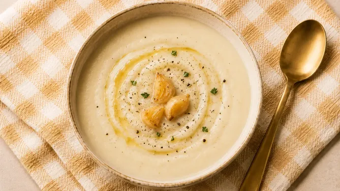
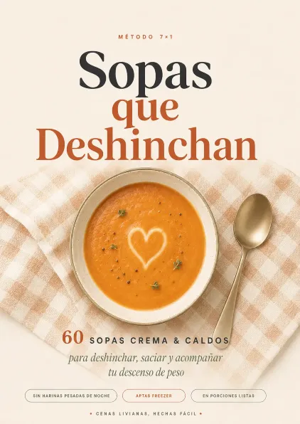
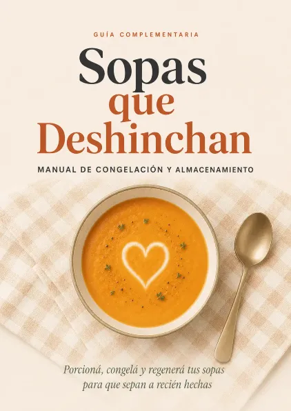

Saciedad sin pesadez
Combinan líquido, vegetales, fibra y temperatura. Comés un plato abundante y se apaga el impulso de seguir picoteando.
MÉTODO PRÁCTICO · ORGANIZACIÓN REAL
El Método Sopas que Deshinchan resuelve ese momento crítico, la noche, con un sistema que organiza cenas saludables y de rápida digestión para acompañar tu descenso de peso, comiendo rico y sin pasar hambre.
60 sopas y caldos de fácil digestión: nutritivos, ricos y saciantes.
Acceso inmediato · Material 100% digital · Garantía de 7 días · Ingredientes del súper de tu barrio

Los resultados varían según tu punto de partida, constancia y hábitos. El método organiza cenas saludables y de rápida digestión que acompañan tu descenso de peso; no garantiza una cantidad exacta de kilos ni reemplaza la consulta médica o nutricional.
EL MOMENTO CRÍTICO
Durante el día podés tener toda la intención de cuidarte. Arrancás bien, comés mejor, te prometés que esta vez te vas a organizar.
Pero cuando llega la noche, todo cambia. Llegás agotada, con hambre de verdad, con la cabeza llena y con cero ganas de pensar qué cocinar.
No es falta de disciplina. Es falta de una cena resuelta antes de que llegue el cansancio.
EL MECANISMO
El Método Sopas que Deshinchan fue creado para resolver ese punto exacto del día: la noche.
Porque muchas veces el problema no es no saber qué deberías comer. El problema es llegar agotada y tener que decidir, cocinar, lavar, pensar en la familia y encima cuidarte.
Ahí es donde una cena simple, caliente, abundante y de fácil digestión puede cambiar toda la rutina. No para que comas menos. Para que comas mejor organizada.
SACIEDAD REAL
Olvidate de la idea de cenar poco, quedarte con hambre o tomar una sopa sin gracia. El método trabaja con sopas crema, caldos y preparaciones calientes pensadas para darte saciedad, calma y organización real.
Combinan líquido, vegetales, fibra y temperatura. Comés un plato abundante y se apaga el impulso de seguir picoteando.
Una cena caliente te obliga a bajar el ritmo, comer más despacio y cerrar la jornada con más calma.
Preparaciones livianas y fáciles de digerir para sentirte más cómoda y menos pesada al acostarte.
Preparás una vez, guardás en porciones y resolvés varias cenas sin cocinar todos los días.




MÉTODO 7x1
El corazón del sistema es simple: invertís un solo momento de organización y dejás tus cenas listas para varios días.
CATEGORÍAS
Cada receta está clasificada por categoría. Abrís la heladera, mirás cómo venís y elegís. Así de simple.
Para días fríos o metabolismo lento. Jengibre, cúrcuma, pimienta y vegetales que abrigan desde adentro.
Tu salvavidas para las noches de ansiedad o hambre voraz. Alto volumen, te dejan llena de verdad.
El rescate de los días de retención y pesadez. Livianas, suaves, fáciles de digerir.
Para cuando el cuerpo pide confort y sabor casero, sin harinas refinadas ni cubitos industriales.
QUÉ TE LLEVÁS
La guía central del sistema para entender la cena y usar sopas livianas y saciantes para cerrar el día rica y liviana.

60 recetas listas para usar, organizadas por categorías A, B, C y D + 4 caldos base.

El paso a paso técnico para cocinar, porcionar, congelar, descongelar y recalentar sin perder sabor ni textura.
BONOS INCLUIDOS
Cada bono resuelve una de las razones por las que antes abandonabas.

Qué cenar cada noche, ya resuelto.

Recorrés el súper en 15 minutos, una sola vez por semana, sin gastar de más.

Una base para todos + la técnica del topping en el plato.

Cortás la ansiedad de la media tarde con caldos calientes y sabrosos.

Conservás y transportás porciones sin depender del freezer.

Cenas calientes y livianas en menos de 20 minutos.

El ritual de cierre para después de cenar.

Rituales cortos de 3, 7 y 15 minutos para bajar la ansiedad.

Recursos simples para ordenar el cierre del día y descansar mejor.
Desde tu celular: marcás las sopas de la semana y la app arma las porciones y tu lista de compras exacta.
el valor de lo que te llevás
Cuando entrás al método, dejás de hacerte estas preguntas todas las noches:
El sistema ya lo pensó por vos. Vos solo elegís, calentás y comés.
QUIERO ACCEDER AL MÉTODO AHORAnuestra mejor validéz
"Siempre abandonaba las dietas porque llegaba a la noche con ansiedad y me comía todo. Con estas sopas me voy a dormir súper llena, pero a la mañana me levanto con el abdomen desinflamado. Es un viaje de ida."
Mujer de 35 años, buscaba deshincharse sin pasar hambre."Mi problema era cocinar algo para mí y otra cosa para mi marido y los chicos. Con la técnica de los toppings hago una olla grande, les sumo agregados y listo. Me ahorró horas en la cocina."
Mujer de 42 años, sin tiempo para cocinar doble."Pensé que comer sopa iba a ser aburrido o carísimo. Todo lo compro en la verdulería del barrio, y poder congelar las porciones me salvó las semanas de más trabajo."
Mujer de 50 años, buscaba opciones económicas y prácticas.OFERTA DE LANZAMIENTO
Una sola noche de comida pedida te sale más que el método completo. Y el método te resuelve la cena de muchísimas noches.
Valor real total $77.400 ARS
Precio exclusivo de lanzamiento
$19.350 ARSAcceso inmediato · Garantía 7 días · Pago en pesos · Material 100% digital
GARANTÍA
Probalo sin ningún riesgo durante 7 días completos.
Llevate todo el material, revisá las recetas, mirá el menú, explorá los bonos y organizá tu primera semana. Si sentís que no es para vos, pedís la devolución dentro del plazo y te devolvemos el 100%.
Sin formularios eternos, sin preguntas incómodas, sin letra chica. El riesgo lo ponemos nosotros. Vos solo te animás a empezar.
PREGUNTAS FRECUENTES
No. El método no se basa en comer poco, sino en la saciedad por volumen: sopas con caldo, vegetales, fibra y temperatura que llenan y apagan la ansiedad.
Todo lo contrario. Con el sistema 7x1 cocinás una sola tarde, porcionás y dejás cenas listas para varios días.
Para nada. Zapallo anco, cabutia, repollo, zanahoria, puerro, verdeo, cúrcuma, jengibre y hojas verdes: todo de la verdulería del barrio.
Con el Bono Sopas Familiares cocinás una base común y, directo en el plato, les sumás a ellos agregados más contundentes.
Porque no es una dieta restrictiva: es un sistema de organización. Al tener la cena resuelta con el menú y la lista, eliminás la improvisación nocturna.
Muchas mujeres notan menos hinchazón y más liviandad ya en la primera semana. El descenso de peso es gradual y depende de tu punto de partida, tus hábitos y tu constancia.
No es obligatorio. Tenés Sopas en Frasco para conservar sin congelar y Recetas Express que se hacen al momento.
Es 100% digital. Apenas confirmás el pago, recibís el acceso inmediato a todo el material.
No. Organiza tus cenas para que sean livianas y prácticas, y acompaña tu descenso de peso. Si tenés alguna condición de salud, consultalo con tu profesional de confianza.
EMPEZÁ ESTA SEMANA
Tu próxima semana puede ser distinta. No porque tengas más tiempo, ni porque mágicamente desaparezca el cansancio. Sino porque vas a tener un sistema preparado antes de que llegue la noche.
Cenas calientes. Porciones listas. Compras organizadas. Freezer ordenado. Recetas express para emergencias. Y una app para no pensar en nada.
QUIERO ACCEDER AL MÉTODO AHORAAcceso inmediato · 7 días de garantía total · Pago en pesos